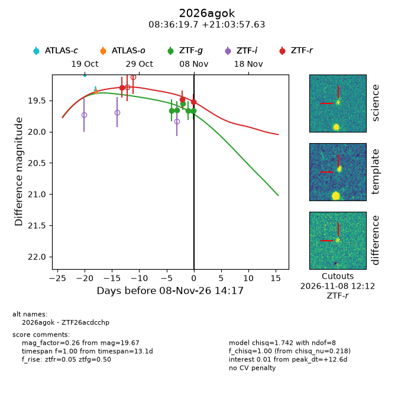
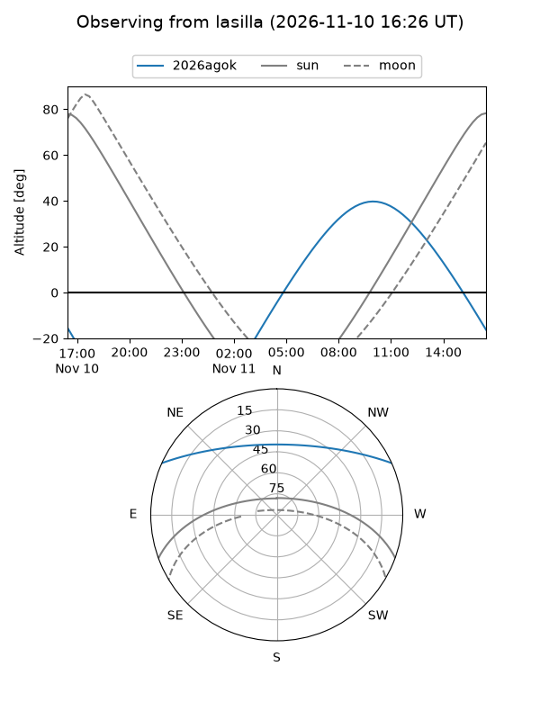
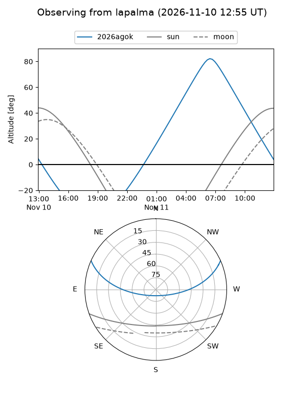
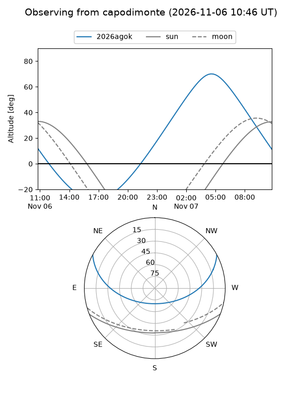
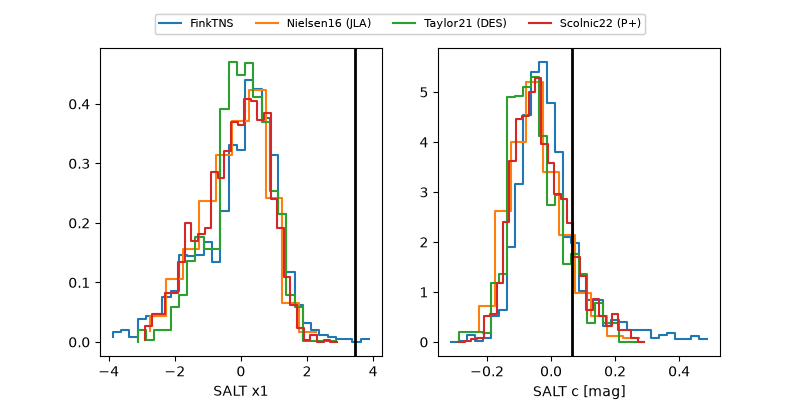

2026agok
Target 2026agok at 2026-11-08 14:19
Aliases and brokers:
FINK-ZTF: ztf.fink-portal.org/ZTF26acdcchp
Lasair-ZTF: lasair-ztf.lsst.ac.uk/objects/ZTF26acdcchp
ALeRCE-ZTF: alerce.online/object/ZTF26acdcchp
YSE-PZ: ziggy.ucolick.org/yse/transient_detail/2026agok
TNS name: wis-tns.org/object/2026agok
Direct TNS query: direct search
alt names
ZTF26acdcchp (ztf,fink_ztf)
2026agok (tns,yse)
Coordinates:
equatorial (ra, dec) = 129.0820,+21.06601
equatorial (HMS+DMS) = 08:36:19.69,+21:03:57.63
galactic (l, b) = (203.9789,+32.06410)
Flags:
peak dt: +12.6
Photometry:
last ztfg=19.67, ztfr=19.52
5 ztfg, 3 ztfr detections
Lightcurve

Visibility



Additional plots
